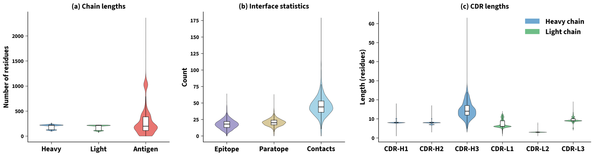
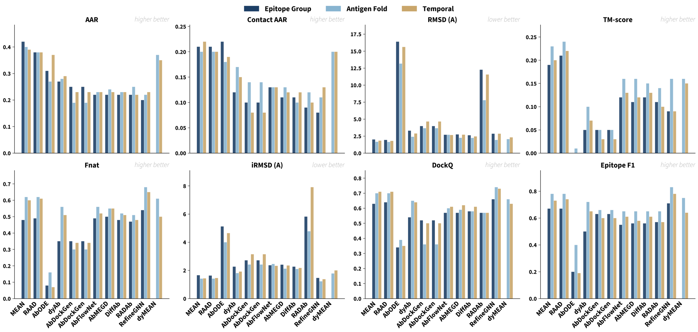
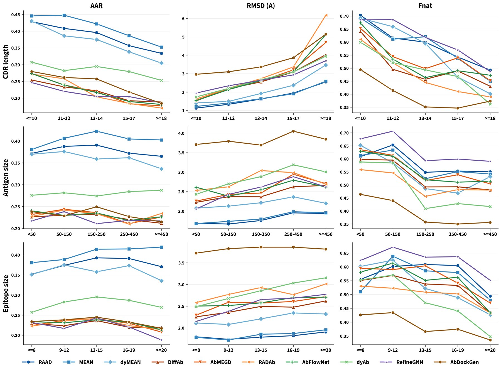

TL;DRAntibody design methods are trained on different SAbDab snapshots, tested on non-overlapping sets and scored with incompatible metrics, so their numbers cannot be compared. ChiMERa-Bench fixes the task, the data and the metrics: one canonical formulation of epitope-conditioned CDR sequence-structure co-design, 2,922 curated complexes under three generalization splits, five metric groups including new epitope-specificity measures, and eleven methods retrained under identical conditions.
Abstract
Computational antibody design has seen rapid methodological progress, with dozens of deep generative methods proposed in the past three years, yet the field lacks a standardized benchmark for fair comparison and model development. These methods are evaluated on different SAbDab snapshots, non-overlapping test sets, and incompatible metrics, and the literature fragments the design problem into numerous sub-tasks with no common definition. We introduce ChiMERa-Bench (CDR Modeling with Epitope-guided Redesign), a unified benchmark built around a single canonical task: epitope-conditioned CDR sequence-structure co-design. ChiMERa-Bench provides three components. The first is a curated, deduplicated dataset of 2,922 antibody-antigen complexes with epitope and paratope annotations. The second is a set of three biologically motivated stratified splits that test generalization to unseen epitopes, unseen antigen folds, and prospective temporal targets. The third is a comprehensive evaluation protocol with five metric groups, including novel epitope-specificity measures. We benchmark methods spanning six generative paradigms and report results across all splits. ChiMERa-Bench is the largest dataset of its kind for the epitope-conditioned antibody CDR co-design problem, allowing the community to develop and test novel methods and evaluate their generalizability.
Nothing in this field is comparable
Antibodies bind an antigen through six complementarity-determining regions (CDRs), and CDR-H3, the third heavy-chain loop, is the most variable of them and the primary determinant of specificity. Deep generative models have taken over this design problem, with diffusion models, flow matching, equivariant graph neural networks and autoregressive decoders all proposed within three years. Their reported numbers, however, do not compare.
Methods train on different snapshots of the Structural Antibody Database (SAbDab) under different filters, they test on non-overlapping hold-outs, and they score with metrics computed under different definitions, since contact cutoffs range from 4.5 to 6.6 Å and root mean square deviation (RMSD) is reported with or without Kabsch alignment. They also consume incompatible input formats, so a head-to-head comparison means building a separate data pipeline for every method.
Underneath the bookkeeping lies a deeper problem. The literature splits antibody design into inverse folding, structure prediction, co-design, docking, affinity optimization, de novo generation and epitope-conditioned design, and each method addresses a different subset. Two papers can therefore report the same metric and still measure different things.
A curated dataset of 2,922 complexes
We rebuild the dataset from SAbDab through the six stages drawn above. Quality filters keep protein and peptide antigens with paired heavy and light chains at a resolution of 4.0 Å or better, MMseqs2 clusters the concatenated variable domains at 95% sequence identity with 80% coverage and keeps the highest-resolution representative of each cluster, and validation discards complexes whose numbering, conserved residues, CDRs or backbone are incomplete. Epitope and paratope residues are annotated at a 4.5 Å heavy-atom cutoff.
Antigen length varies widely at $288 \pm 278$ residues, from viral surface proteins down to short peptides, while the antibody variable domains are uniform at $121 \pm 5$ (heavy) and $108 \pm 3$ (light). CDR-H3 is by far the most variable loop at $14.6 \pm 4.3$ residues with a range of 3 to 63, whereas CDR-H1 and CDR-H2 sit near 8 residues with little spread.

Many antibodies, one antigen, different epitopes
Of the 2,470 unique antigen sequences, 258 are bound at two or more distinct epitopes, and those antigens account for 710 of the 2,922 complexes. The most promiscuous antigen is targeted at 30 distinct sites. A model therefore cannot succeed by reconstructing a plausible interface. It has to reconstruct the interface at the requested site, which is what the epitope-group split and the epitope-specificity metrics measure.
Three splits, three kinds of generalization
Every split assigns whole clusters to one partition, so no cluster spans training and test. Clusters are packed greedily into the partition with the largest remaining deficit against an 80/10/10 target.
Epitope-group
Complexes are clustered by the three-dimensional shape of the epitope patch, through the Kabsch-aligned RMSD of its Cα coordinates, so the test set holds epitope geometries never seen in training.
2,338 train · 292 val · 292 test
Antigen-fold
Antigen chains are clustered by structural fold with Foldseek at a TM-score of 0.5 and bidirectional coverage of 50%, ignoring sequence identity, so the test set holds folds absent from training.
2,338 train · 292 val · 292 test
Temporal
Complexes are ordered by deposition date, with the oldest in training and the most recent in test, which simulates prospective deployment on targets deposited after the training period.
2,337 train · 292 val · 293 test
One task, five metric groups
Given an antigen structure $A$, a target epitope $E \subseteq V_A$ and an antibody framework $F$, the task is to design the CDR residues that are most probable under the model while contacting the target epitope and nothing else,
where each designed residue carries an amino acid type, a Cα coordinate and a local frame orientation, and $\mathcal{C}(R, A)$ is the set of antigen residues that the designed CDRs contact. Inverse folding fixes the backbone, structure prediction fixes the sequence, unconditional co-design sets $E = V_A$, and docking quality is read off DockQ and interface RMSD, so the sub-tasks of the literature are special cases of this one formulation.
Sequence quality
Amino acid recovery (AAR), contact AAR restricted to paratope residues, and perplexity for the models that produce sequence likelihoods.
Structural quality
Cα RMSD after Kabsch alignment and TM-score, both standardized so that differing implementations no longer change the ranking.
Interface quality
Fraction of native contacts (Fnat), interface RMSD over contact residues, and the DockQ composite score.
Epitope specificity
Epitope precision, recall and F1, which measure whether a design contacts the site it was asked to target.
Designability
The count of known sequence liability motifs that are associated with manufacturing problems.
Two contact definitions serve two purposes. Dataset annotations, the paratope mask and contact AAR use the strict 4.5 Å heavy-atom cutoff of the epitope annotation literature. The interface and epitope metrics instead use the 8 Å Cα cutoff of CAPRI, computed symmetrically on the native and the predicted structure, which tolerates the coordinate error of generative models without rewarding atom-level clashes.
Eleven methods, retrained from scratch
We retrain eleven methods across six generative paradigms with the authors' released code, adapted for ChiMERa-Bench: equivariant graph neural networks (RAAD, MEAN, dyMEAN), diffusion models and their extensions (DiffAb, AbMEGD, RADAb, AbFlowNet), flow matching (dyAb), autoregressive generation (RefineGNN), hierarchical equivariant networks (AbDockGen) and conjoined ordinary differential equations (AbODE). All training and inference runs on one NVIDIA H100.

| Epitope-group split | AAR↑ | CAAR↑ | RMSD↓ | Fnat↑ | DockQ↑ | EpiF1↑ |
|---|---|---|---|---|---|---|
| RAAD | 0.38 | 0.21 | 1.95 | 0.49 | 0.64 | 0.67 |
| MEAN | 0.42 | 0.21 | 2.01 | 0.48 | 0.63 | 0.67 |
| dyMEAN | 0.35 | 0.17 | 2.60 | 0.41 | 0.56 | 0.55 |
| DiffAb | 0.22 | 0.11 | 2.64 | 0.48 | 0.58 | 0.56 |
| AbFlowNet | 0.22 | 0.13 | 2.70 | 0.49 | 0.57 | 0.55 |
| AbMEGD | 0.22 | 0.11 | 2.76 | 0.50 | 0.57 | 0.56 |
| RADAb | 0.22 | 0.09 | 12.28 | 0.47 | 0.57 | 0.57 |
| dyAb | 0.27 | 0.12 | 3.31 | 0.35 | 0.54 | 0.50 |
| RefineGNN | 0.20 | 0.08 | 2.86 | 0.54 | 0.66 | 0.71 |
| AbDockGen | 0.23 | 0.09 | 3.93 | 0.34 | 0.52 | 0.62 |
| AbODE | 0.31 | 0.22 | 16.40 | 0.08 | 0.34 | 0.20 |
CDR-H3 results on the epitope-group split, our primary setting. Best in bold, second best underlined. The paper reports the standard deviations, perplexity, TM-score, interface RMSD and the liability counts, together with the full tables for the antigen-fold and temporal splits.
Sequence recovery is a poor proxy for binding
Equivariant graph neural networks lead sequence recovery, with CDR-H3 AAR between 0.35 and 0.42, well above the diffusion and flow-matching methods between 0.22 and 0.27. The interface metrics reorder the field. RefineGNN recovers the most native contacts and the best docking quality despite the lowest sequence recovery of the set, while RAAD and MEAN trail it on Fnat. AbODE is the extreme case: it reaches the best contact-residue recovery and still returns a degenerate backbone with a CDR-H3 RMSD of 16.40 Å, which we trace to its polar-coordinate loop parameterization.
Novel epitopes are where the methods break
Sequence recovery barely notices which split it is measured on, since RAAD reaches an AAR of 0.38 on all three. The interface and epitope metrics drop sharply once entire epitope clusters are held out, with RAAD falling from an Fnat of 0.62 to 0.49 and an EpiF1 of 0.78 to 0.67, and nearly every method moves in the same direction. The epitope-group split withholds the epitope geometry, which is exactly the signal a model must use to place its contacts, whereas local patch geometry recurs across different antigen folds. The gap is smallest for structure-conditioned autoregressive generation, which places contacts residue by residue, and largest for one-shot denoising.
| Method | AAR↑ | Fnat↑ | EpiF1↑ | |||
|---|---|---|---|---|---|---|
| EG | AF | EG | AF | EG | AF | |
| RAAD | 0.38 | 0.38 | 0.49 | 0.62 | 0.67 | 0.78 |
| MEAN | 0.42 | 0.40 | 0.48 | 0.62 | 0.67 | 0.78 |
| DiffAb | 0.22 | 0.23 | 0.48 | 0.52 | 0.56 | 0.65 |
| dyAb | 0.27 | 0.28 | 0.35 | 0.56 | 0.50 | 0.72 |
| RefineGNN | 0.20 | 0.22 | 0.54 | 0.68 | 0.71 | 0.83 |
| AbODE | 0.31 | 0.27 | 0.08 | 0.16 | 0.20 | 0.40 |
Epitope-group (EG) against antigen-fold (AF). Sequence recovery is flat across the two, while the interface and epitope metrics are consistently lower on the epitope-group split. Part of that margin reflects a covariate shift, because the antigen-fold test partition also skews toward smaller antigens and epitopes, which are easier on the interface metrics.
Length drives difficulty, capacity does not
CDR-H3 length is the dominant difficulty axis. Sequence recovery, backbone accuracy and native-contact recovery all degrade as the loop lengthens, and the methods separate most in the long-loop regime, where RefineGNN degrades least. Antigen size and epitope size barely move sequence recovery, although native-contact recovery peaks on medium epitopes of 7 to 15 residues and falls off on both sides.

Model capacity and training compute do not predict design quality. MEAN, the smallest model at 0.7M parameters, matches or beats the diffusion models on CDR-H3 across all three splits, including RADAb, which adds a frozen 650M-parameter ESM-2 encoder and a retrieval stage for no measurable gain over plain DiffAb. MEAN and RAAD train in under 4 GPU-hours, against 6 to 11 for the diffusion models, and inference cost spans three orders of magnitude, from under a minute per split to roughly two to three hours for RADAb.
| Method | Type | Parameters | Train (GPU-h) | Inference (min) | AAR↑ | Fnat↑ |
|---|---|---|---|---|---|---|
| MEAN | Equivariant GNN | 0.7M | 3.5 | 0.5 | 0.42 | 0.48 |
| RAAD | Equivariant GNN | 6.8M | 2.8 | 0.8 | 0.38 | 0.49 |
| DiffAb | Diffusion | 4.0M | 7.4 | 8.5 | 0.22 | 0.48 |
| RADAb | Retrieval and diffusion | 661M | 6.5 | 119.6 | 0.22 | 0.47 |
Four of the eleven methods on the epitope-group split, chosen to show the span. Training time is wall-clock on one H100 and inference time covers the whole test split.
What the designs look like
Three complexes of the epitope-group test split, in order of increasing CDR-H3 length. Panel (a) holds the full antigen-antibody complex with the native CDR-H3 boxed and the epitope painted on the antigen surface, and the remaining panels overlay the loop that each method designs on the native loop in cyan. Every panel turns about the antibody-to-antigen axis in step, so a prediction that looks close from one side rarely stays close through the turn.
CDR-H3 predictions on the test set
Rendered with UCSF ChimeraX from the deposited structures behind the paper's qualitative comparison. Each panel shares one viewing direction, and each loop keeps one colour across the three complexes.
Get the data
The curation pipeline, the evaluation protocol and the retraining setup of all eleven baselines are public. The pipeline is parameterized through a single configuration file, so the benchmark can be regenerated against any future SAbDab snapshot. We also ship the precomputed heterogeneous residue graphs that the graph-based methods consume, with sequential, spatial and contact edges and per-residue language-model embeddings.
Limitations
We score designs against static crystallographic structures, so the benchmark does not model conformational flexibility, solvent effects or measured binding affinity, and a high score is necessary but not sufficient evidence of a viable binder. The dataset also inherits the biases of SAbDab and the PDB toward viral surface antigens, human-derived antibodies and X-ray crystallography. Coupling ChiMERa-Bench to affinity datasets for a joint structure-and-affinity track, adding a flexible-target track that scores against multiple conformations, and regenerating the benchmark against newer SAbDab snapshots are the natural next steps.
BibTeX
@article{ahmed2026chimerabench,
title = {{ChiMERa-Bench}: A Benchmark Dataset for Epitope-Specific Antibody Design},
author = {Ahmed, Mansoor and Taj, Nadeem and Khan, Imdad Ullah and Venkateswara, Hemanth and Patterson, Murray},
journal = {Transactions on Machine Learning Research},
issn = {2835-8856},
year = {2026},
url = {https://openreview.net/forum?id=3m8uaq7luq}
}